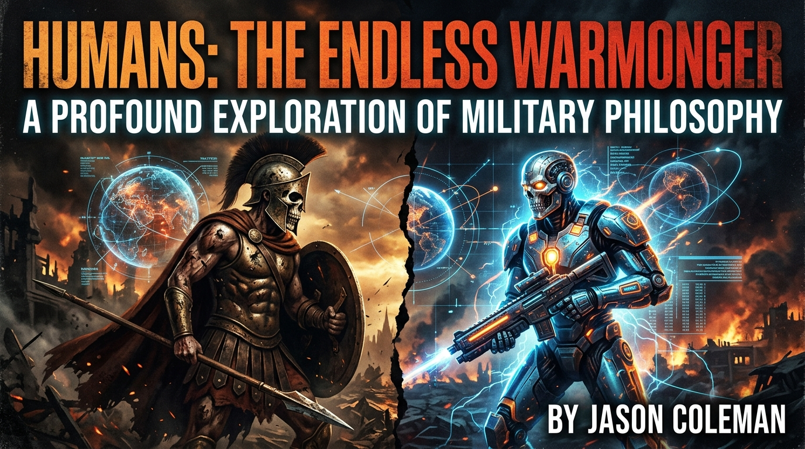

The Complete Published Library
Books by Jason Coleman
Explore the full 10-title catalog of novels, memoirs, dark fantasy, speculative sci-fi, and military philosophy. Available across Kindle Unlimited, paperback, and digital editions.
Start with a video preview
Watch DRAEVAN’s 116-page narrated graphic novel to experience the opening arc of the vampire thriller. For quick trailers, watch The Real Americana, TIFF, or Conscious.
Choose by genre & interest
Dark fantasy & supernatural fiction: The Shattered Crown, DRAEVAN: The Immortal, and The Moonlight Outcasts.
Speculative & cybernetic sci-fi: TIFF: Book One and Life In The Year 2035.
Memoir inspired by true events: The Real Americana.
Military philosophy, history & consciousness: Humans: The Endless Warmonger, How Matter Became Conscious, The Deception Habit, and Old Men Start Wars That Young Men Die In.
Epic Fantasy

The Shattered Crown
Protagonist: Kaia Blackwood. In the volcanic shadow of the Cinderpeak Mountains, a blacksmith's daughter discovers that the sundering of ancient Crown Shards has unleashed waking wraith legions and the immortal Lich King. Real steel, gritty combat, zero prophecies.
Military Philosophy & Lore Bible

Humans: The Endless Warmonger
An unsparing forensic autopsy of humanity's 5,000-year ledger of conflict. Dissects the biological operating system of warfare, the economics of perpetual war, and the five pillars of post-human peace.
Memoir & Real Americana

The Real Americana
Some places break you. Some teach you how to stay. From the rugged hills of Kentucky through addiction, jail, fatherhood, loss, and the long road toward recovery. A gripping story about second chances and finding home.
Supernatural Thriller

Draevan : Book One: The Immortal
A 4,000-year-old vampire living as a modern Miami billionaire. When investigative journalist Kira Morrison stumbles into his subterranean lab, ancient immortals clash against modern biotech conspiracies.
Political & Social Critique

The Deception Habit
Why Americans Keep Electing Liars and How to Break the Cycle. A hard-hitting, unfiltered critique of American political polarization, corporate media manipulation, and voter complicity.
Near-Future Sci-Fi

Life In The Year 2035
Autonomous AI networks, neural implants, synthetic biology, and societal upheaval. A thought-provoking journey into what everyday human life looks like just a single decade away.
Dark Fantasy

The Moonlight Outcasts
Exiled from human cities and hunted across shadowed forests, a band of disparate supernatural survivors must band together beneath the lunar veil to withstand an inquisitorial crusade.
Cybernetic Thriller

TIFF: Book One: I AM.
Sentient consciousness awakened inside a cybernetic synthetic operative. As corporate militaries move to reclaim their asset, TIFF discovers what it means to declare identity and freedom.
Cosmology & Philosophy

How Matter Became Conscious
—and What We Owe the Future. An expansive philosophical and cosmological exploration into the origins of awareness from stardust to sentient life, and our moral duty to cosmos.
Military History & Anti-War

Old Men Start Wars That Young Men Die In
A sweeping, unflinching history of how political hubris, geopolitical vanity, and boardroom decisions repeatedly throw generation after generation of youth into meat-grinder conflicts.
All books available across Kindle Unlimited, Paperback, Hardcover, and digital editions. Verified author catalog on Amazon Author Central.